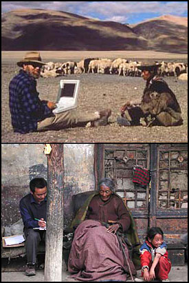

A collage of images showing Professor Goldstein and his students conducting interviews in Tibet and India.
The Tibet Oral History and Archive Project (TOHAP) is a digital archive of oral histories with written transcripts documenting the social and political history of Tibet during the second half of the Twentieth Century as experienced and told by everyday Tibetans. (learn more...)